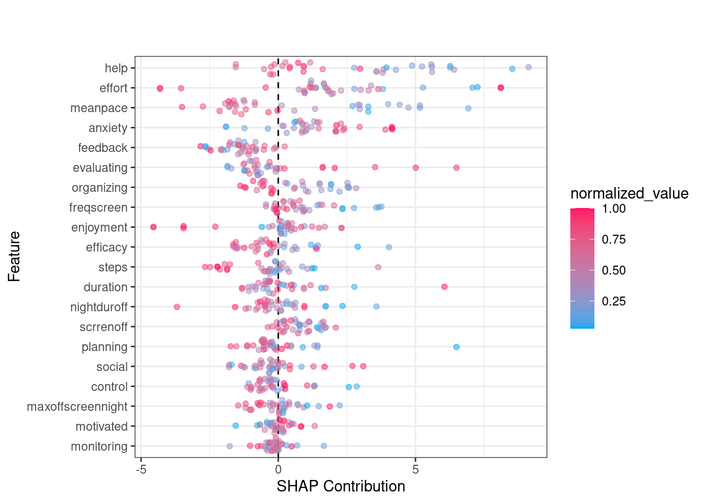
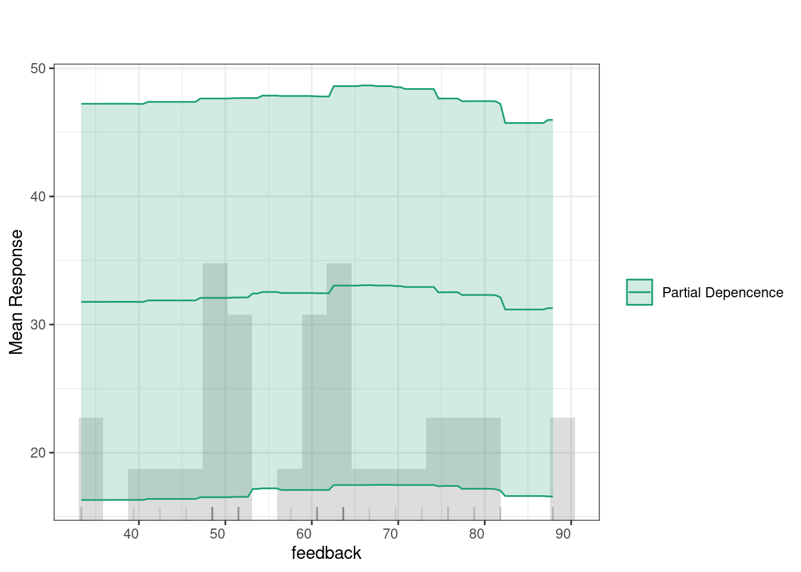
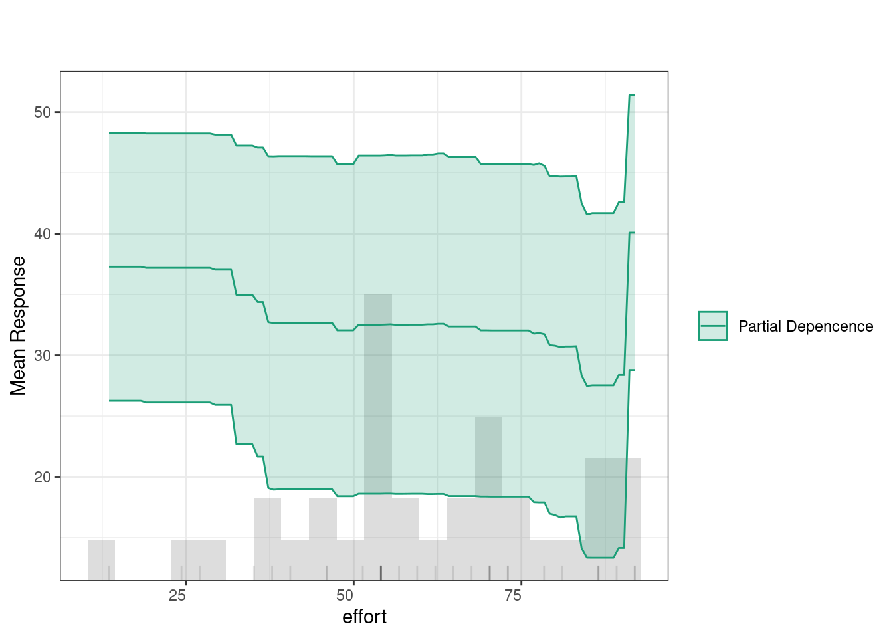
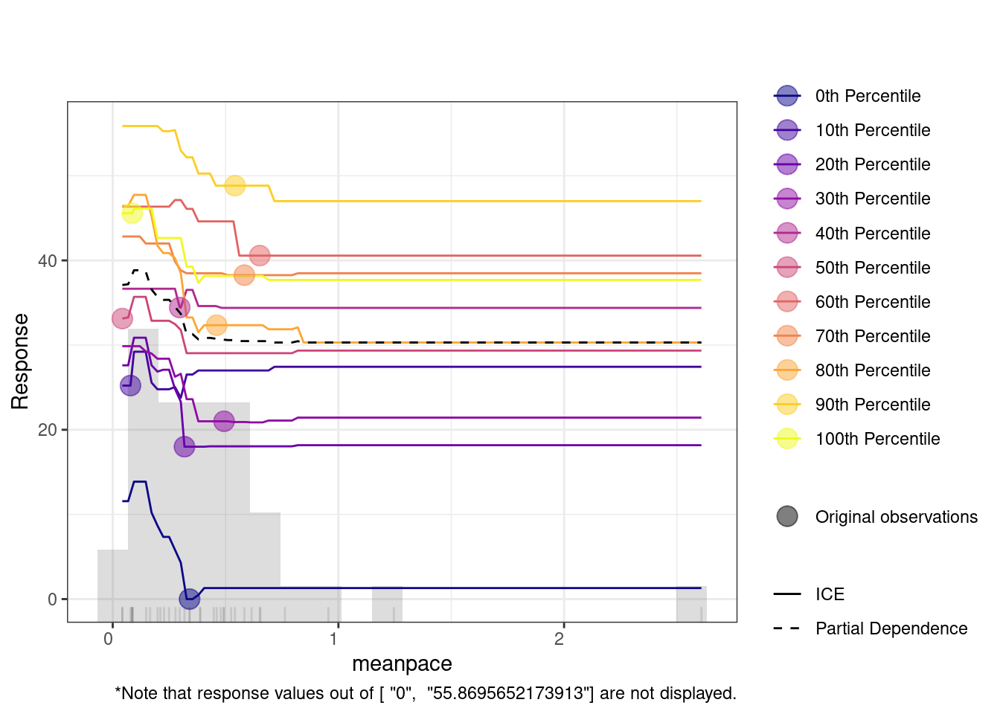

set.seed(265)
# Load necessary libraries
library(tidyverse) # For data manipulation
library(h2o) # For H2O ML platform
# Read the dataset
synthetic_data <- import("https://github.com/lamethods/data2/raw/main/srl/srl.RDS")22 Automating Individualized Machine Learning and AI Prediction using AutoML: The Case of Idiographic Predictions
Abstract
This chapter introduces a tutorial on using Automated Machine Learning (AutoML) to automate and scale predictive modeling in education. In particular, we illustrate the usefulness of AutoML for idiographic analysis, where each individual student has their own particular model fitted from their own individual data. We demonstrate how AutoML simplifies the ML pipeline, enabling the creation of individually optimized models for multiple datasets Moreover, we illustrate how to apply explainable artificial intelligence techniques to automate the interpretation of the main model predictors, offering a view of the variables that matter. The complete pipeline demonstrated in this tutorial holds potential to provide automated real-time insights based on idiographic analysis in a transparent and trustable way.
1 Introduction
Predictive analytics is a branch of analytics that uses students’ data, statistical algorithms, or machine learning (ML) techniques to forecast future outcomes [1] [2]; [3]; [4]. Prediction is important for developing theories, hypothesis testing, and evaluating the relevance of the theoretical knowledge to research and practice. Therefore, prediction has been a central pillar of of scientific research [5]. Moreover, predictive analytics enables organizations to make informed decisions, optimize resources, and anticipate future risks or opportunities [6]. As such, predictive analytics has been widely adopted across industries, from healthcare to marketing, due to its ability to transform data into actionable insights. As data becomes increasingly diverse and voluminous, predictive analytics plays a critical role in handling big data and providing actionable insights [7]; [4]; [8], which has been a central interest of researchers in learning analytics and artificial intelligence (AI) in education [9].
In the previous chapters we studied modeling full datasets and explained them [10–13]. In this chapter we will learn how to model each student individually as a whole unit of analysis. In other words, the full dataset belongs to a single student. This is done by collecting several data points from the same student over time that is enough for building a predictive model for the student. These models are known as idiographic e.g., [8, 14, 15]. Idiographic models are novel and promise accurate insights at the resolution of single students. For a detailed reading about the these models, interested readers can resort to chapter [15] or these papers [8], [16–19].
Given the need to model students individually, the process needs to be automated to process multiple datasets. Therefore, in this chapter, we will learn how to implement AutoML for a large number of idiographic datasets using h2o, which is a cross-platform open-source, scalable machine learning framework that supports a wide range of algorithms [20]. Among the algorithms that h2o supports are generalized linear models (GLM), gradient boosting machines (GBM), random forests (RF), deep learning (DL), k-means clustering, and extreme gradient boosting (XGBoost). H2O is designed to handle large datasets can efficiently use distributed computing capabilities. The h2o package works seamlessly with R and is also available for Python among others. It performs automation of the ML process from model selection and hyperparameter tuning and reporting of results. Also, h2o includes tools for model explanation and supports easy visualization and plotting of results [20].
2 Automated Machine Learning (AutoML)
The core of predictive analytics lies in building predictive models, which are often built using techniques such as regression analysis, decision trees, and neural networks [2, 4]. These models are trained to recognize complex relationships within the data, making it possible to forecast future trends with a degree of confidence [2, 7]. Constructing such predictive models entails several steps which are often repetitive which roughly includes data pre-processing and preparation for analysis, feature engineering and selection to identify the relevant variables. Next, model selection, training and evaluation of model’s performance . Based on these results, the model is tuned and optimized for better accuracy [10, 11].
Since the steps to conduct the predictive analytics workflow are mostly the same each time, it is possible to automate them using AutoML [21–23]. AutoML is a relatively novel and growing area in machine learning (ML) that aims to —as the name implies— automate the process of applying ML to real-world problems [24, 25]. In fast-paced environments, models need to be updated and redeployed regularly to adapt to new data or changing conditions. AutoML automates many steps of the ML life cycle, making it feasible to frequently refresh models as part of a continuous integration pipeline. Furthermore, when working with a large number of similar datasets, it becomes impractical to repeat the ML process for each manually. As such, AutoML allows to automate this process, optimizing ML model to each specific dataset. Besides the obvious scalability benefits, research has found that AutoML can achieve good results as traditional ML with expert tuning [8, 24, 25].
The core function of AutoML lies in optimizing ML workflows, from data pre-processing to model deployment. Recent advancements in AutoML techniques have led to substantial improvements in predictive performance [26]. For example, the framework now encompasses methodologies such as neural architecture search, which automatically designs neural networks tailored to specific tasks. This has led to models that achieve state-of-the-art performance across numerous benchmarks [27]. Additionally, the introduction of automated feature engineering techniques enables models to learn relevant features from raw data, enhancing model accuracy without extensive manual intervention [28].
Furthermore, AutoML streamlines the process of feature selection, making it easier to handle high-dimensional data [20]. The automation of hyperparameter tuning and model selection significantly reduces the time required for model development. AutoML systems may outperform traditional methods in terms of efficiency, leading to quicker time-to-insight and facilitating more rapid iterations in model improvement [29]. AutoML can also achieve competitive or superior performance compared to human experts. Through exhaustive search strategies and advanced algorithms, AutoML often yield models that may surpass human-crafted solutions [30]. In doing so, AutoML can make high-quality models accessible to non-experts while also reducing the time and computational costs traditionally associated with ML development [23]. Further, automating the time-consuming aspects of model development allows AutoML tools to lower the barriers for organizations and individuals to utilize ML, enabling a broader range of industries to integrate AI-driven solutions [31]. This is increasingly relevant, as organizations across various sectors progressively rely on data-driven decision-making to maintain competitive advantage.
There are also several challenges and opportunities within AutoML. One prominent challenge is the computational cost, particularly as the demand for larger and more complex models (such as large language models, LLMs) grows. Applying AutoML to such models, which require enormous computational resources, poses difficulties for scaling and sustainability [21]. Another issue is the environmental impact of AutoML processes, as they consume significant energy and computational resources. The integration of “Green AI” principles, which emphasize energy-efficient algorithms and workflows, has been proposed to address these concerns [32].
3 AutoML in education research
The use of AutoML has not been very prominent in the education scientific literature. However, an increasing number of studies recognize its potential. The study by Garmpis et al. [22] addressed the challenges posed by recent policy changes in higher education system in Greece, which led to departmental unification and increased dropout rates. The researchers utilized AutoML to identify the best predictive models and parameters and analyzed a dataset of 23,687 students enrolled in the “Computer Networking” module, employing the open-source data science platform for model development and evaluation. The model’s accuracy was assessed using established evaluation metrics, including precision, recall, and F-measure. Their findings indicated that the model accurately predicted approximately 92% of student performance, specifically identifying students at risk of dropping out or facing delays in graduation. This approach demonstrates the potential of AutoML in enhancing educational outcomes and supporting strategic interventions for student success [22]. Similarly, Zhao and Wang [33] used AutoML to predict online learning adaptability and achieved a high accuracy of 90.9%. Their empirical findings showed that AutoML yielded higher performance than traditional methods for all the evaluated metrics.
In another study, Bosch [34] conducted experiments using AutoML to streamline feature engineering for student models in the National Assessment of Educational Progress data mining competition. Bosch compared two AutoML feature engineering methods, Featuretools and TSFRESH (Time Series FeatuRe Extraction on basis of Scalable Hypothesis tests), which had rarely been applied to student interaction log data. The TSFRESH method provides a novel feature selection technique to manage over 4,000 heterogeneous features with a relatively small student sample, The study findings revealed that TSFRESH features were significantly more effective than both Featuretools and expert-engineered features [34]. However, the interpretability of these models remains limited. To overcome the limitation of interoperability in Bosch’s study [34], Buñay-Guisñan and colleagues [35] developed a dashboard that combines AutoML and Explainable AI to predict student dropout, allowing non-experts to upload datasets and automatically generate predictive models, along with counterfactual explanations to help users understand the factors affecting student dropout.
In another study, Tsiakmaki et al. [36] focused on predicting students’ academic performance, researchers explored the use of AutoML strategies, a critical area within Educational Data Mining and Learning Analytics. Recognizing the need for accurate learning models at a low cost, they introduced a fuzzy-based active learning method that integrates AutoML practices in a modular fashion. This approach leverages fuzzy logic to create high-performance and transparent models while reducing the time and cost of labeling data by effectively utilizing a small set of labeled data alongside a larger set of unlabeled data. Given the complexity of ML algorithms and the high-dimensional input space, selecting the right method and optimizing parameters can be challenging. To address this, they conducted numerous experiments that demonstrated the efficiency of their proposed method in accurately identifying students at risk of failure. These insights not only have the potential to enhance the learning experience but also contribute significantly to the broader science of learning.
The few existing research studies in AutoML appear to take advantage of this technique to optimize their models and to make ML accessible to non-experts. However, the potential of AutoML to automate the ML pipeline for many individual models to enable idiographic ML, has barely been fulfilled. To the knowledge of the authors, only one article has come close to implementing this technique to automatically create, fit and optimize idiographic models [8], which is the aim of this tutorial. In said study, the authors automated the feature selection, as well as the model training and evaluation of the prediction of students’ variables related to self-regulated learning based on previous measures.
4 Tutorial: Using h2o for ML for idiographic ML
In this tutorial, we will explore how to use the h2o ML platform to build, evaluate, and compare idiographic models. It is assumed that the reader is familiar with the R programming language. If that is not the case, it is recommended to refer to previous tutorials on the basics of R [37], data cleaning [38], basic statistics [39], and visualization [40], as well as prediction [2, 10, 10, 11] and explainable AI [12, 13]. When working with idiographic analysis, we treat each individual person as an independent dataset and, therefore, we need a separate ML model for each person [15]. Implementing all steps of the ML pipeline for each individual dataset is extremely time consuming for researchers, and impossible to do in real time if the ML models are to be deployed and regularly updated when new data is collected. Therefore, AutoML is more suitable for idiographic analysis.
As a first step, we need to load the essential R packages. We load the tidyverse package for data manipulation tasks, and the h2o package for AutoML. The next code loads the dataset with the readRDS() function. We also set a random seed that ensures the split is reproducible, helping to maintain consistency in results.
The dataset used in this tutorial is a synthetic dataset based on the work by [8] which collected data using the Concise Self-Regulation Survey (CSRL) [41], as well as phone sensor and contextual data. However, we will use only the a combination of CSRL and sensor data here. In the next step, we select and define the variables that we will use as inputs for our ML models. We start by categorizing the variables into two groups: phone activity variables and self-regulated learning (SRL) variables.
The phone activity variables represent various physical and behavioral patterns related to daily activities, giving us insights into a person’s physical and digital behavior, which may affect learning performance.
These include the following features:
"meanpace": average pace of movement"steps": the number of steps taken"freqscreen": frequency of screen use"duration": duration of screen usage"scrrenoff": time the screen is off"nightduroff": duration of screen-off time during the night"maxoffscreennight": the longest period during which the screen is off at night.
The SRL variables capture key aspects of cognitive and emotional self-regulation, which are crucial for understanding how learners manage and control their learning processes. These variables are derived from self-reported data reflecting various self-regulated learning strategies. They include:
"efficacy": The belief in one’s ability to complete learning tasks effectively."value": The perceived importance or value of learning tasks."planning": The ability to plan and organize learning activities ahead of time."monitoring": Keeping track of learning progress and task completion."effort": The amount of effort put into learning tasks."control": The ability to resist distractions and stay focused on learning."help": Seeking help from teachers, friends, or other resources when needed."social": Interactions and feelings of belonging within the college or learning community."organizing": Organizing and structuring study time and materials."motivated": The level of motivation and enthusiasm towards learning and achieving better grades."feedback": Learning from feedback to improve performance."evaluating": Self-evaluating one’s work to improve skills and performance."anxiety": The level of anxiety or stress experienced during learning or in tasks."enjoyment": The amount of enjoyment and satisfaction gained from completing tasks and achieving goals.
Next, we combine both the self-regulated learning (SRL) variables and the phone activity variables into a single vector of predictors. We then define the response variable as "learning" (how much the student learnt during this day or period or gained knowledge), which serves as the target variable that the model will attempt to predict based on the input predictors.
# Define the phone activity variables
phone_vars <- c("meanpace", "steps", "freqscreen", "duration",
"scrrenoff", "nightduroff", "maxoffscreennight")
# Define the SRL variables
srl_vars <- colnames(select(synthetic_data, efficacy:enjoyment))
# Combine all variables into the Predictors list
predictors <- c(srl_vars, phone_vars)
# Set the response variable
response_variable <- "learning"4.1 Building an idiographic model
Before working with the H2O AutoML framework, we need to initialize the h2o cluster. This involves allocating resources such as the number of threads and the maximum memory size for the computation. Here, initialize h2o with the nthreads parameter set to 6, which allows h2o to utilize 6 CPU cores. Additionally, the max_mem_size parameter is set to "12G", specifying that up to 12GB of memory can be used for model training and processing. You can adjust these settings based on your system’s resources to ensure optimal performance during model training and evaluation. The initialization results in a “Connection successful!” message and h2o prints the h2o cluster information which include the up time, the timezone and detailed version information.
# Step 1: Initialize h2o with specified resources
h2o.init(nthreads = 12, max_mem_size = "12G") # Adjust memory and threads if necessaryGiven that idiographic models are single-subject by definition, we need to select a single student from the dataset who will be the target of our initial analysis. Using the unique() function, we extract a list of unique student names and choose a particular student by specifying their index (e.g., the 5th student which carries the fake name Alice). Once Alice is selected, we filter the dataset using the filter() function from the dplyr package to include only the rows that correspond to Alice’s data (the 5th student). After filtering, we remove the "name" column, as it is no longer needed with the select() function. This results in a filtered dataset that contains only the relevant variables for Alice for further analysis. If we know the student already, we could of course use a simpler way by filtering only Alice data like the code below using synthetic_data %>% filter(name == "Alice")
# Step 2: Retrieve the specific name (e.g., the first unique name)
specific_name <- unique(synthetic_data$name)[5]
# Step 3: Filter the dataset for the selected person and remove the 'name' column
filtered_data <- synthetic_data %>%
filter(name == specific_name) %>% # Filter rows where 'name' matches the selected person
select(-name) # Exclude the 'name' column from the data
# An alternative approach to selecting
filtered_data <- synthetic_data %>%
filter(name == "Alice") %>% # Filter rows where 'name' matches the selected person
select(-name) # Exclude the 'Alice' column from the dataThe following steps are similar to traditional ML with some minor differences. We prepare the data by first converting it into an h2o data frame by splitting it into training and testing sets, and defining the predictors and response variable. The data transformation into an h2o format is done using as.h2o() function. This transformation is necessary because h2o can only work with h2o data format. h2o’s requires this format for better optimization and efficient distributed processing and parallel computations which standard R data frames cannot provide.
# Disable progress bar for clarity
h2o.no_progress()
# Step 4: Convert the filtered data into an h2o frame
h2o_data <- as.h2o(filtered_data) # Convert into an h2o format for processingNext, we split the data into training and testing sets using h2o.splitFrame() and ratios = 0.8, which means 80% of the data and will be used to train the model, while the remaining 20% is reserved for testing. Splitting the data is standard procedure for evaluating the model’s performance on unseen data and ensuring it generalizes well, also, we will use the testing set to evaluate the model. We also ensure that the seed is set using seed = 256 for reproduciblity.
# Step 5: Split the h2o frame into training (80%) and testing (20%) sets
# Use seed for reproducibility
splits <- h2o.splitFrame(data = h2o_data, ratios = 0.8, seed = 256)
train_data_h2o <- splits[[1]] # Training data (80%)
test_data_h2o <- splits[[2]] # Testing data (20%)Finally, we define the predictors and the response variable. The predictors include all the relevant features in the dataset except the target outcome, which is the "learning" variable. The model will use these predictors to learn and make predictions, with the response variable representing the learning outcome we aim to predict.
# Step 6: Define predictors and response variable for model training
predictors <- setdiff(names(filtered_data), "learning")
response_variable <- "learning" # Specify the response variable nameNext, we will use h2o’s AutoML which will automate the complete ML pipeline for us. The function h2o.automl() simplifies the process of model training and evaluation by automatically testing multiple algorithms and performing hyperparameter tuning within a user-defined time limit. It stores all the models in the results, allowing us to easily compare their performance. Let’s go through the parameters one by one.
x = predictors: This specifies the predictor variables or features that the model will use to make predictions. Thepredictorslist includes all the variables we want the model to learn from, excluding the target variable which are the SRL and phone activity data.y = response_variable: This is the response variable, also known as the target or dependent variable. In this case, it’s set to"learning", which represents the outcome we are trying to predict.training_frame = train_data_h2o: Thetraining_frameis the dataset used to train the model, which must be anh2oFrame. In this case, it’s the 80% split of the filtered data that we converted into anh2oFrame.nfolds = 5: This specifies the number of cross-validation folds. Cross-validation is a technique where the data is split into multiple parts, or “folds,” and the model is trained on different subsets of the data while being validated on the remaining parts. By settingnfolds = 5, the training data is split into 5 folds, helping ensure that the model generalizes well to new data and doesn’t over-fit and gives an average of the five training folds.max_runtime_secs = 900: This sets the maximum time (in seconds) that the AutoML process can run. It limits the overall time spent on training and evaluating models. In this case, we set a short time limit of 900 seconds, so the process will stop once this limit is reached, even if all possible models haven’t been trained. This parameter can be adjusted based on the available computational resources and the task.seed = 256: When you specify a seed, the model training process can be repeated with the same results. This is important when you want to compare results or ensure consistency across different runs.
# Step 7: Train the model using h2o AutoML
automl_model <- h2o.automl(
x = predictors, # Predictor variables
y = response_variable, # Response variable
training_frame = train_data_h2o, # Training data
nfolds = 5, # Number of cross-validation folds
max_runtime_secs = 900, # Maximum runtime in seconds
seed = 256 # Random seed for reproducibility
)After h2o AutoML completes the job of training the models, it creates a leaderboard (a list models ranked from best to worst performing model). The leaderboard allows us to rank the resulting models that were estimated with different algorithms and hyperparameters. Given that there are multiple metrics to evaluate performance, there are several ways also to rank the algorithms. The h2o default methods for regression is Root Mean Squared Error (RMSE). To get the leaderboard, we use h2o.get_leaderboard we supply the automl_model given that it the object that contains the models, and set extra_columns = "ALL" to get all the possible evaluation parameters. To view the top 10 models in the leaderboard, we use the head(leaderboard, 10) function which will display a ranked list of models trained by AutoML.
# Step 8: View the leaderboard of models
leaderboard <- h2o.get_leaderboard(automl_model, extra_columns = "ALL")
head(leaderboard, 10)| model_id | rmse | mse | mae | rmsle | mean_res_dev | training_ms | algo |
|---|---|---|---|---|---|---|---|
| GBM_grid_1_AutoML_93_20240930_00046_model_57 | 9.03 | 81.53 | 3.07 | 0.39 | 81.53 | 384 | GBM |
| StackedEnsemble_BestOfFamily_3_AutoML_93_20240930_00046 | 9.16 | 83.91 | 3.50 | 0.38 | 83.91 | 110 | StackedEnsemble |
| StackedEnsemble_BestOfFamily_5_AutoML_93_20240930_00046 | 9.41 | 88.57 | 3.95 | 0.45 | 88.57 | 215 | StackedEnsemble |
| StackedEnsemble_BestOfFamily_4_AutoML_93_20240930_00046 | 9.64 | 92.88 | 5.15 | 0.53 | 92.88 | 514 | StackedEnsemble |
| GBM_grid_1_AutoML_93_20240930_00046_model_2 | 9.68 | 93.80 | 3.39 | 0.39 | 93.80 | 472 | GBM |
| GBM_grid_1_AutoML_93_20240930_00046_model_54 | 9.76 | 95.30 | 3.24 | 0.40 | 95.30 | 354 | GBM |
| GBM_grid_1_AutoML_93_20240930_00046_model_3 | 10.02 | 100.38 | 3.45 | 0.42 | 100.38 | 284 | GBM |
| GBM_grid_1_AutoML_93_20240930_00046_model_63 | 10.34 | 106.96 | 3.23 | 0.40 | 106.96 | 462 | GBM |
| GBM_grid_1_AutoML_93_20240930_00046_model_35 | 10.36 | 107.31 | 3.33 | 0.41 | 107.31 | 265 | GBM |
| GBM_5_AutoML_93_20240930_00046 | 10.41 | 108.45 | 3.64 | 0.40 | 108.45 | 204 | GBM |
The leaderboard has several fields which we will discuss (Table 22.1). The model ID identifies each model and specifies the algorithm used for training. For instance, the model named GBM_grid_1_AutoML_93_20240930_00046_model_57 refers to a Gradient Boosting Machine (GBM) model while StackedEnsemble_BestOfFamily_3_AutoML_93_20240930 uses the StackedEnsemble algorithm. The h2o package uses a naming convention that can provide insights about the model. In that, StackedEnsemble_BestOfFamily_3_AutoML_93_20240930 indicates a stacked ensemble model that selects the best-performing models from the AutoML run, as indicated by “BestOfFamily.” The number “3” shows that it is the third iteration of the model. “AutoML_93” means it is part of the 93rd AutoML run, and “20240930” is the date the AutoML process was executed, formatted as YYYYMMDD (September 30, 2024). The next field, RMSE (Root Mean Squared Error), is a well-known metric for evaluating regression models that measures the average prediction error. For example, the model GBM_grid_1_AutoML_93_20240930_00046_model_57 has an RMSE of 9.03, which indicates that its predictions deviate by an average of 9.03 units from the actual values of the target variable (learning). Since it has the lowest RMSE on the leaderboard, this model is the best-performing model in our analysis. Please note that our variables scale ranges from 0-100 so, 9 points is still small. MSE (Mean Squared Error) is another evaluation metric that refers to the squared average prediction error. The GBM_grid_1_AutoML_93_20240930_00046_model_57 model has a value of 81.53 and confirming its strong performance. MAE (Mean Absolute Error) measures the average magnitude of the errors in the predictions, without considering their direction. In this case, GBM_grid_1_AutoML_93_20240930_00046_model_57 has the lowest MAE at 3.07, indicating that its absolute prediction errors are smaller, on average, compared to other models, which have MAEs around 3.50–5.15. RMSLE (Root Mean Squared Logarithmic Error) is particularly useful when the target variable exhibits large variations. The StackedEnsemble_BestOfFamily_3_AutoML_93_20240930 has an RMSLE of 0.38, showing good performance in scenarios with varying target values. Mean Residual Deviance is similar to MSE and represents the average error per prediction. The GBM_grid_1_AutoML_93_20240930_00046_model_57 has the lowest value at 81.53, indicating strong predictive accuracy. Finally, the training time (ms) measures how long it took to train the model. The StackedEnsemble_BestOfFamily_3_AutoML_93_20240930 model trained in 110 milliseconds, while the GBM_grid_1_AutoML_93_20240930_00046_model_57 took 384 milliseconds.
4.1.1 Best models
To retrieve the best model based on pre-set criteria we can use the function h2o.get_best_model, which allow us to specify the metric that we want to use to select the best model or the algorithm (e.g., RF, GBM or GLM). To do so, we use the function h2o.get_best_model() with the parameter automl_model to obtain the best model and assign it to an R object best_model. In that case, h2o will retrieve the best model based on RMSE since it is the default ranking criteria. If you want to change that, you can use criterion = "MAE" for instance or other metrics e.g., RMSE.
# Step 9: Extract the best-performing model
best_model <- h2o.get_best_model(automl_model)4.1.2 Evaluation of the model
To evaluate how the model could perform in the wild we need to use completely new data that the model has not seen before. To test the model performance with data that the model has not seen before we can use h2o.performance(best_model) with the parameter newdata = test_data_h2o. This enables us to understand what the model can do in real-life applications. The h2o.performance function calculates several metrics such as MSE, RMSE, MAE, and RMSLE.
# Step 9.1: Evaluate the best model's performance on the test data
best_model_performance <- h2o.performance(best_model, newdata = test_data_h2o)
# Step 9.2: Print the performance metrics on test data
print(best_model_performance)
# Step 9.3: Generate predictions on the test data
predictions <- h2o.predict(best_model, test_data_h2o)In our case, the metrics for the best GBM model were:
- MSE: 159.6543
- RMSE: 12.63544
- MAE: 4.978724
- RMSLE: 0.2364497
- Mean Residual Deviance: 159.6543
The RMSE indicates that the GBM model’s predictions were 12.64 points on average different from the values of the target variable (learning). This RMSE suggests that the model has a reasonable level of error in predicting the target variable. Similarly, the MSE (Mean Squared Error) is 159.65, which reflects the squared average of the errors, while the MAE is 4.98, showing the average absolute difference between predicted and actual values. The RMSLE is 0.24, which is helpful for understanding the model’s performance when the target variable has large variations. The Mean Residual Deviance is also 159.65, representing the average error per prediction, which aligns with the MSE. Please note that these parameters are different than the above ones in the leaderboard table, since we evaluated the model with unseen data, and it is expected to see some drop in model performance.
To visualize the evaluation, we can create predictions on the test data using h2o.predict(best_model, test_data_h2o) to visualize the model predictions with the new data. We do so by plotting the predicted versus actual values using a scatter plot, as demonstrated below. Note that we must convert the h2o data frames into standard data frames to use them with traditional R packages. It may be also helpful to analyze the residuals (the differences between the actual and predicted values). Ideally, residuals should be randomly distributed around zero without any clear patterns. The code below computes the residuals, and plots them. As the figure shows, we can see that most observations are around 0 however, some extreme values are also there indicating that the model fared bad in some days. This is of course expected given the variability of daily performance.
#Step 2: Convert the test data and predictions to R data frames}
test_data_df <- as.data.frame(test_data_h2o) # Convert h2o test data to dataframe
predictions_df <- as.data.frame(predictions)# Convert h2o predictions to dataframe
# Step 3: Combine the predictions with the original test data
result_df <- cbind(test_data_df, Predicted_Learning = predictions_df$predict)
# Scatterplot of actual vs predicted values
ggplot(result_df, aes(x = learning, y = Predicted_Learning)) +
geom_point(color = "blue", alpha = 0.5) + # Scatter points
# Ideal line (y = x)
geom_abline(slope = 1, intercept = 0, linetype = "dashed", color = "red") +
labs(x = "Actual Learning",
y = "Predicted Learning") +
theme_minimal()
# Create a residual column
result_df <- result_df %>%
mutate(Residuals = learning - Predicted_Learning)
# Scatterplot of residuals vs predicted values
ggplot(result_df, aes(x = Predicted_Learning, y = Residuals)) +
geom_point(color = "darkred", alpha = 0.5) +
geom_hline(yintercept = 0, linetype = "dashed") +
labs(x = "Predicted Learning",
y = "Residuals") +
theme_minimal()

However, the best model chosen automatically by h2o may not be the optimal solution for every case. One has to balance accuracy, training time, and model interpretability. For instance, GBM and XGBoost are capable of handling complex relationships and often provide good predictive performance maybe computationally expensive. Random Forest (DRF) is a faster algorithm and is particularity distinguished for its inherent interpretability making it suitable when simplicity and explainaility are needed. Deep Learning is adept at capturing non-linear patterns is also computationally expensive and harder to explain. Stacked ensembles combine several models to enhance performance but increases complexity and training time. In our case, we need a model that offers performance and be explainable e.g., GBM or DRF.
To select a certain model, h2o also allows us to extract top algorithms by type by specifying them in the function call e.g., GBM, XGBoost, DRF, DeepLearning, and StackedEnsemble. To do so, we call the function h2o.get_best_model with the parameter algorithm = "algorithm_name". For example, to get the best GBM model, we call h2o.get_best_model(automl_model, algorithm = "gbm") and then we store it in the object best_gbm. In the same way, we can get other models like the code below.
The next code retrieves the best performing models for various ML algorithms. Specifically, it gets the best GBM, XGBoost, Distributed Random Forest, Deep Learning, and Stacked Ensemble models, and stores them in the best_gbm, best_xgboost, best_drf, best_deeplearning, and best_stackedensemble variables respectively.
best_gbm <- h2o.get_best_model(automl_model, algorithm = "gbm")
best_xgboost <- h2o.get_best_model(automl_model, algorithm = "xgboost")
best_drf <- h2o.get_best_model(automl_model, algorithm = "drf")
best_deeplearning <- h2o.get_best_model(automl_model, algorithm = "deeplearning")
best_stackedensemble <- h2o.get_best_model(automl_model, algorithm = "stackedensemble")Explainability offers better transparency and helps build trust in the model’s decisions. This is especially useful when making critical decisions based on ML predictions. The h2o package offers several well-crafted functions for evaluating the models with rich visualizations through h2o.explain(). Besides basic model performance metrics, it provides a wide range of diagnostic information and visualizations, such as variable importance, residual analysis, and prediction explanations plots. See [12, 13] for a full explanation on explainable ML models and techniques.
The code below runs h2o.explain() function to analyze and explain the behavior of the model. We here choose another model, given that we already seen the GBM model. We choose the best_drf (a previously trained model) to be evaluated on the test_data_h2o. The function generates a detailed explanation of each plot and what it means, so we will not repeat them here. Of interest to our case is the Variable Importance Plot, which ranks the variables based on their contribution to the model’s predictions. The variable importance plot shows that feedback, effort, and duration are the most influential variables in predicting learning outcomes. Other variables like help, mean pace, and steps also contribute, while factors such as planning, evaluating, and social engagement have comparatively less impact.
The SHAP summary plot provides detailed visualization of individual predictions by showing how much each feature contributed to pushing a prediction higher or lower for a specific observation. In SHAP plots, the x-axis represents the SHAP value (i.e., the contribution to the prediction) where positive values increasing predictions and negative values lowering them. The color scale is the normalized value of each feature (where blue is low and red is high). For instance, when effort has higher values (in red), it tends to push predictions towards the positive side of the SHAP axis, suggesting that greater effort is associated with improved learning. In contrast, lower values of effort (in blue) push the prediction towards the negative side, indicating that less effort is linked to lower predicted outcomes. Another example is the mean pace feature. Higher values of mean pace (red points) are associated with positive contributions to the prediction, while lower values (blue points) show a negative contribution. This indicates that faster pacing positively influences learning.
Partial Dependence Plots (PDPs) show how specific variables affect predictions (given that all other variables are held constant). In other words, PDPs allow us to see to which extent a change in a certain feature influences the predicted outcome if all other variables did not change. The green line indicates that feedback has a relatively consistent impact on predictions, with a slight increase at higher values. The histogram below highlights that most feedback values fall between 50 and 80, where the predictions remain stable, suggesting minimal change in the outcome based on feedback levels within this range.
The Individual Conditional Expectation (ICE) plot shows how a variable affects the model’s predictions across different percentiles. For instance, in the duration plot, the x-axis represents duration, and the y-axis shows the predicted response. Each colored line represents a different percentile, with the partial dependence (dashed black line) indicating the average relationship between duration and the response. At lower duration values, predictions remain flat across percentiles, meaning the feature has little impact. However, around the 20,000 mark, predictions increase, especially for lower percentiles (e.g., the 0th percentile). This suggests that longer duration significantly improve predictions for these groups.
# Run h2o.explain to explain the model's behavior
explanained_drf <- h2o.explain(best_drf, test_data_h2o)
# View the explanation output
print(explanained_drf)








4.2 Multiple idiographic models
In the previous steps, we have automated the process of finding the best performing model for one of our students (Alice). As mentioned before, manually creating —and fine tuning— a unique model for each individual is an exhausting time-consuming process and can be impractical when done for several dozens of students as in our case. The AutoML implemented by h2o automates this process by handling model selection, hyperparameter tuning, evaluating and reporting the best models (Figure 22.3). This is where precise h2o AutoML offers an efficient solution that require little interference and offers individualized ML. In fact, this is the case in most of the cases where idiographic models are estimated when we have to deal with multiple people and here where h2o and AutoML becomes more compelling to use.

Since each student’s data patterns may be rather different, the best algorithm may vary from one to another. One student might have better results with GBM, while another might see more accurate predictions from an RF model. AutoML ensures that the best-performing model is chosen based on the characteristics of each person’s data, optimizing the predictions on a per-person basis (idiographically). Also, each individual’s dataset may require different hyperparameter tuning—a functionality that AutoML handles efficiently. Thus, h2o ensures that the model for each individual is not only correctly selected but also fine-tuned for best performance for each individual. The next code, goes through finding the best model for each student in our dataset. The process is technically similar to before, however, with a main difference is that we will loop through each person and use h2o to find the best model as we did before for the single individual.
4.2.1 Estimating multiple algorithms
Similar to what we did in training of the single idiographic model, we begin by loading the necessary libraries: dplyr for data manipulation and h2o for model training. We read the synthetic_Data_share.RDS using readRDS() which contains the data for the individual students. We the define the predictors, the phone activity variables that capture aspects like mean pace, steps, and screen frequency, and the SRL variables which captures students’ SRL as well as self-efficacy and emotions e.g., anxiety and enjoyment. We then combine the variables into a single vector and define the response variable, learning as the target for our prediction.
# Load necessary libraries
library(dplyr) # For data manipulation
library(h2o) # For H2O ML platform
set.seed(265)
# Read in the dataset
synthetic_data <- readRDS("synthetic_Data_share.RDS")
# Define the phone activity variables
phone_vars <- c("meanpace", "steps", "freqscreen", "duration",
"scrrenoff", "nightduroff", "maxoffscreennight")
# Define the SRL variables
srl_vars <- colnames(select(synthetic_data, efficacy:enjoyment))
# Combine all variables into the Predictors list
predictors <- c(srl_vars, phone_vars)
# Set the response variable
response_variable <- "learning"Then, to do the estimation, we begin by initializing the h2o cluster with h2o.init(nthreads = -1, max_mem_size = "12G"). This command ensures that h2o uses all available CPU threads (nthreads = -1) and caps memory usage at 12GB (max_mem_size = "12G"). Since we are creating idiographic models for each person individually we need to allocate sufficient computational resources for the intensive tasks of fitting several hundred models running on multiple datasets.
Our dataset has a name field name that identifies each student dataset. Here, we use unique(synthetic_data$name) to extract all distinct names and later isolate their data. We will later use the list of dataset_names to loop through each person’s data. Inside the loop, we start by filtering the current person data person data. Given that the name is not a predictor, we need to remove the name column too, we do so by using filtered_data <- synthetic_data %>% filter(name == specific_name) to isolate the rows for the individual currently being processed, and select(-name) to remove the name column since it’s no longer needed in the modeling process. After we have filtered the data for the currently modeled student, it needs to be converted to h2o’s data frame format. For that we use the function as.h2o(filtered_data) as we did before in the individual model. The next steps are familiar by now, and entail splitting the data into training and testing datasets using h2o.splitFrame(data = h2o_data, ratios = 0.8, seed = 256). We split the data here into 80% for training and 20% for testing (so the the model can be evaluated on new unseen data). We also seed seed = 256 to ensure that the split remains consistent if we run the model again.
Next, we run h2o.automl() for that student to automatically train multiple ML models on the individual’s training data. We use the predictors list with all the input features (the self-regulated learning variables and phone activity data), and response_variable is set to learning the outcome we want to predict. We also set max_runtime_secs = 300 to specify how long the AutoML process runs for each individual, please that this number is used here for demonstration purposes and you are advised to use higher numbers.
Having trained the model, we can get the best model using h2o.get_best_model(automl_model) to retrieve the best-performing model for the individual. This model is chosen based on its performance (and more specifically based on RMSE which is the default criterion). The next step, we evaluate the model performance on the test data (the unseen data) using h2o.performance(best_model, newdata = test_data_h2o).
In the last step, we store each student’s data, the best model, and the evaluation results into a list named results which contains for each specific_name:
- TrainingData: The data used to train the model.
- TestData: The data used to evaluate the model’s performance.
- AutoMLModel: The full AutoML object containing all the models tried during the AutoML process.
- BestModel: The best performing model chosen by AutoML.
- Performance: The performance metrics of the best model on the test data.
Storing these components helps to easily access and compare the models across individuals. For example, we can later retrieve the best model for any individual and review its performance on the test data and compare or aggregate or study the patterns.
The last two lines of code print the performance of each model for each student. As the reader can see, we created a loop that iterates through the data and performs the basic steps of analysis that we learned in the single person example for each person in our sample, and stores the results in the R object results.
# Initialize h2o with specified resources
h2o.init(nthreads = -1, max_mem_size = "60G")
# Get unique dataset names (subsets)
dataset_names <- unique(synthetic_data$name)
# Set seed for reproducibility
set.seed(2202)
# Initialize a list to store results for each subset
results <- list()
# Loop through each unique dataset (name)
for (specific_name in dataset_names) {
# Filter the dataset for the current subset and remove the 'name' column
filtered_data <- synthetic_data %>%
filter(name == specific_name) %>%
select(-name) # Exclude the 'name' column
# Convert the filtered data into an h2o frame
h2o_data <- as.h2o(filtered_data)
# Split the h2o frame into training (80%) and testing (20%) sets
splits <- h2o.splitFrame(data = h2o_data, ratios = 0.8, seed = 256)
train_data_h2o <- splits[[1]] # Training data (80%)
test_data_h2o <- splits[[2]] # Testing data (20%)
# Train the model using h2o AutoML
automl_model <- h2o.automl(
x = predictors,
y = response_variable,
training_frame = train_data_h2o,
nfolds = 5,
max_runtime_secs = 300, # Adjust this as needed
seed = 256
)
# Get the best model
best_model <- h2o.get_best_model(automl_model,algorithm= c( "drf", "gbm",
"glm", "xgboost"))
# Evaluate the best model on the test data
performance <- h2o.performance(best_model, newdata = test_data_h2o)
# Store the data, models, and performance for the current subset
results[[specific_name]] <- list(
TrainingData = train_data_h2o,
TestData = test_data_h2o,
AutoMLModel = automl_model,
BestModel = best_model,
Performance = performance
)
}4.2.2 Extracting and Plotting Performance Metrics for Multiple Data sets
After training all the models, now we extract the performance metrics for the multiple datasets and visualize them. We will do so by iterating through the results to extract the performance metrics, and create plots to visualize the distributions of metrics. To store the metrics, we need to create an empty data frame with columns corresponding to the metrics we want to collect: RMSE, MSE, MAE, and R². The Dataset column will store the names of each student to be able to link the results to students. We retrieve the performance object we computed before for the student: results[[dataset_name]]$Performance and then use the function h2o.rmse(), h2o.mse(), h2o.mae(), and h2o.r2() to we extract the values and store it performance_data. To plot the data, we will have to reshape it: convert it from wide to long format to make it easier plotting with ggplot2. In doing so, each row will represent one metric and its corresponding value for a dataset which allows us to have a single graph with multiple facets (sub-plots). Finally, we use ggplot2 to create histograms for each metric (see last step in Figure 22.3).
The plots show the distribution of the best idiographic individualized models e.g., MAE, MSE, RMSE, R². In the MAE plot, which measures the average absolute difference between predicted and actual values, we can see a relatively even spread across values ranging from around 2.5 to 7.5. This spread suggests that most models have a moderate error rate. Similarly, the RMSE plot, which places greater emphasis on larger errors, shows a wide range of values from around 4 to 16, indicating variability in prediction quality across different models. The MSE plot reflects squared errors, showing a heavier concentration between 0 and 150, with only a few outliers, meaning that while most models are performing relatively well, a few may struggle with larger errors. The R² (Coefficient of Determination) plot indicates the proportion of variance explained by the model, shows an interesting spread where most R² values are concentrated between 0.5 and 1.0, indicating that the models perform well in explaining the variance for most datasets, excluding “Diana.”
# Load necessary libraries
library(ggplot2)
library(dplyr)
library(tidyr)
# Initialize an empty dataframe to store performance metrics
performance_data <- data.frame(Dataset = character(), RMSE = numeric(),
MSE = numeric(), MAE = numeric(),
R2 = numeric(), stringsAsFactors = FALSE)
# Loop through the results list and extract performance metrics directly
# from results$Performance
for (dataset_name in names(results)) {
# Extract performance metrics directly from the results list
performance <- results[[dataset_name]]$Performance
# Extract individual performance metrics (RMSE, MSE, MAE, R2) from
# already computed data
rmse_value <- h2o.rmse(performance)
mse_value <- h2o.mse(performance)
mae_value <- h2o.mae(performance)
r2_value <- h2o.r2(performance)
# Append the extracted metrics to the performance dataframe
performance_data <- rbind(performance_data, data.frame(
Dataset = dataset_name,
RMSE = rmse_value,
MSE = mse_value,
MAE = mae_value,
R2 = r2_value
))
}
# Reshape the data to long format for easier plotting with ggplot
performance_data_long <- performance_data %>%
gather(key = "Metric", value = "Value", -Dataset) %>%
filter(!(Metric == "R2" & Dataset == "Diana"))
ggplot(performance_data_long, aes(x = Value)) +
geom_histogram(bins = 10, color = "black", fill = "skyblue") +
facet_wrap(~ Metric, scales = "free") +
labs(title = "Distribution of Performance Metrics",
x = "Value", y = "Frequency") +
theme_minimal()
4.2.3 Explanatory variables
Having plotted the evaluation metrics, now we extract the top five most important variables for each student based on the best model stored in the results list that we created before. The code similarly loops through each student’s data, retrieves the variable importance from their best model, and stores the top variables in the top_variables list. The code begins by creating an empty list called top_variables. This list will serve as a container for storing the top five variables for each student as we loop through the results list. As the loop iterates over the results list, it first extracts the name of each student and the corresponding “best” model for that student. This model is extracted using results[[student_name]]$BestModel. Then we extract the important variables using h2o.varimp(best_model) function. This function returns the variables ranked by their contribution to the model’s predictive power.
From this table of variables, the script selects the top five variables by using the head(varimp[, "variable"], 5) function. These variables are then stored in the top_variables list under the student’s name making it easy to analyze and compare across different models.
The process is repeated for each student in the dataset, so that every individual’s top variables are extracted and stored. Once the loop has finished, the top_variables list contains a detailed mapping of the top five variables for every student. At the end of the script, we can view or inspect the top_variables list to see the most important variables for each student. We offer a summary plot also for the most frequent variables and their ranking to examine which variables were most frequent, for instance, at frist position.
# Initialize an empty dataframe to store variable positions for plotting
variable_positions <- data.frame(Variable = character(), Position = integer(),
stringsAsFactors = FALSE)
# Loop through each student and collect variable positions
for (student_name in names(top_variables)) {
# Get the top 5 variables for the student
top_vars <- top_variables[[student_name]]
# Ensure we only process students with valid top 5 variables
if (is.null(top_vars) || length(top_vars) == 0) next
# Assign position 1 to 5 to each variable and store in dataframe
for (i in seq_along(top_vars)) {
variable_positions <- rbind(variable_positions,
data.frame(Variable = top_vars[i], Position = i))
}
}
# Count the total frequency of each variable and arrange them in descending order
variable_positions <- variable_positions %>%
group_by(Variable) %>%
mutate(Frequency = n()) %>%
ungroup() %>%
arrange(desc(Frequency))
# Set up a color palette using RColorBrewer
my_colors <- brewer.pal(10, "Set3") # Choose a color palette with 5 colors
# Plot the frequency of variables in each position, arranged by overall frequency
ggplot(variable_positions,
aes(x = reorder(Variable, -Frequency), fill = as.factor(Position))) +
geom_bar(position = "stack", color = "black") +
scale_fill_manual(values = my_colors) + # Apply the selected color palette
labs(x = "Variable",
y = "Frequency",
fill = "Position") +
theme_minimal() +
theme(axis.text.x = element_text(angle = 45, hjust = 1)) # Rotate x-axis labels 
5 Conclusion
In this chapter, we have learned how to implement an AutoML pipeline covering several common ML algorithms. The tutorial has illustrated how to replicate this pipeline across multiple datasets belonging to different individuals, each resulting into an optimized model that most accurately predicts said individual. As exemplified, this technique is very suitable to be able to scale up idiographic analysis [15], since it requires that each individual has its very own model: a task that becomes unfeasible as the number of individuals increases. We demonstrate how AutoML simplifies the ML pipeline, enabling the creation of individually optimized models for multiple datasets efficiently. Moreover, we illustrate how to apply explainable AI techniques to automate the description of the main features and characteristics of each model. The complete pipeline demonstrated in the chapter holds potential to provide automated real-time insights based on idiographic analysis in a transparent and trustable way [42].
However, idiographic analysis is not the only use case for AutoML. AutoML can be used as an alternative to manual analysis [10, 11] in any other case since, as mentioned before, empirical results show AutoML models perform better than —or at least on par with– human-made models. AutoML is especially useful in scenarios that require continuous update of the models, for example real-time dashboards or adaptive learning systems, where it is impossible for a person to perform all of the steps of the ML pipeline in time to provide useful insights. Lastly, it should be noted that AutoML can be used for use cases beyond prediction, such as clustering [43], for example, enabling the automatic detection of students’ groups or profiles.
References
1.
Mishra N, Silakari S (2012) Predictive analytics: A survey, trends, applications, oppurtunities & challenges. International Journal of Computer Science and Information Technologies 3:4434–4438
2.
Jovanovic J, López-Pernas S, Saqr M (2024) Predictive Modelling in Learning Analytics: A Machine Learning Approach in R. Springer Nature Switzerland, pp 197–229
3.
Brooks C, Thompson C (2017) Predictive modelling in teaching and learning. Society for Learning Analytics Research (SoLAR), pp 61–68
4.
Saqr M, Jovanovic J, Viberg O, Gašević D (2022) Is there order in the mess? A single paper meta-analysis approach to identification of predictors of success in learning analytics. Studies in Higher Education 47:2370–2391. https://doi.org/10.1080/03075079.2022.2061450
5.
Shmueli G, Koppius OR (2011) Predictive analytics in information systems research. MIS Quarterly 35:553–572
6.
Adesina AA, Iyelolu TV, Paul PO (2024) Leveraging predictive analytics for strategic decision-making: Enhancing business performance through data-driven insights. World J Adv Res Rev 22:1927–1934. https://doi.org/10.30574/wjarr.2024.22.3.1961
7.
Olaniyi O, Shah NH, Abalaka A, Olaniyi FG (2023) Harnessing predictive analytics for strategic foresight: A comprehensive review of techniques and applications in transforming raw data to actionable insights. SSRN Electron J. https://doi.org/10.2139/ssrn.4635189
8.
Saqr M, Cheng R, López-Pernas S, Beck ED (2024) Idiographic artificial intelligence to explain students’ self-regulation: Toward precision education. Learning and Individual Differences 114:102499. https://doi.org/10.1016/j.lindif.2024.102499
9.
López-Pernas S, Oliveira E, Song Y, Saqr M (2025) AI, explainable AI and evaluative AI: An introduction to informed data-driven decision-making in education. In: Saqr M, López-Pernas S (eds) Advanced learning analytics methods: AI, precision and complexity. Springer Nature Switzerland, Cham
10.
Saqr M, Misiejuk K, Tikka S, López-Pernas S (2025) Artificial intelligence: Using machine learning to predict students’ performance. In: Saqr M, López-Pernas S (eds) Advanced learning analytics methods: AI, precision and complexity. Springer Nature Switzerland, Cham
11.
Saqr M, Misiejuk K, Tikka S, López-Pernas S (2025) Artificial intelligence: Using machine learning to classify students and predict low achievers. In: Saqr M, López-Pernas S (eds) Advanced learning analytics methods: AI, precision and complexity. Springer Nature Switzerland, Cham
12.
Saqr M, López-Pernas S (2025) Explainable artificial intelligence in education: A tutorial for identifying the variables that matter. In: Saqr M, López-Pernas S (eds) Advanced learning analytics methods: AI, precision and complexity. Springer Nature Switzerland, Cham
13.
Saqr M, López-Pernas S (2025) Individualized explainable artificial intelligence: A tutorial for identifying local and individual predictions. In: Saqr M, López-Pernas S (eds) Advanced learning analytics methods: AI, precision and complexity. Springer Nature Switzerland, Cham
14.
Saqr M, Dever D, López-Pernas S (2025) Idiographic networks: A tutorial on graphical vector autoregression and unified structural equation modeling. In: Saqr M, López-Pernas S (eds) Advanced learning analytics methods: AI, precision and complexity. Springer Nature Switzerland, Cham
15.
Saqr M, Ito H, López-Pernas S (2025) A comprehensive introduction to idiographic and within-person analytics. In: Saqr M, López-Pernas S (eds) Advanced learning analytics methods: AI, precision and complexity. Springer Nature Switzerland, Cham
16.
Saqr M, Lopez-Pernas S (2021) Idiographic learning analytics: A definition and a case study. 2021 International Conference on Advanced Learning Technologies (ICALT) 163–165. https://doi.org/10.1109/icalt52272.2021.00056
17.
Ito H, López-Pemas S, Saqr M (2024) A scoping review of idiographic research in education: Too little, but not too late. 2024 IEEE International Conference on Advanced Learning Technologies (ICALT) 10–12. https://doi.org/10.1109/icalt61570.2024.00010
18.
Saqr M (2023) Modelling within-person idiographic variance could help explain and individualize learning. British Journal of Educational Technology 54:1077–1094. https://doi.org/10.1111/bjet.13309
19.
Saqr M (2024) Group-level analysis of engagement poorly reflects individual students’ processes: Why we need idiographic learning analytics. Computers in Human Behavior 150:107991. https://doi.org/10.1016/j.chb.2023.107991
20.
Fryda T, LeDell E, Gill N, Aiello S, Fu A, Candel A, Click C, Kraljevic T, Nykodym T, Aboyoun P, Kurka M, Malohlava M, Poirier S, Wong W (2024) h2o: R interface for the ’H2O’ scalable machine learning platform
21.
Tornede A, Deng D, Eimer T, Giovanelli J, Mohan A, Ruhkopf T, Segel S, Theodorakopoulos D, Tornede T, Wachsmuth H, Lindauer M (2023) AutoML in the age of large language models: Current challenges, future opportunities and risks. arXiv [csLG]
22.
Garmpis S, Maragoudakis M, Garmpis A (2022) Assisting educational analytics with AutoML functionalities. Computers 11:97. https://doi.org/10.3390/computers11060097
23.
Shen Z, Zhang Y, Wei L, Zhao H, Yao Q (2018) Automated machine learning: From principles to practices. arXiv [csAI]
24.
He X, Zhao K, Chu X (2021) AutoML: A survey of the state-of-the-art. Knowledge-Based Systems 212:106622. https://doi.org/10.1016/j.knosys.2020.106622
25.
(2023) A survey of the state-of-the-art AutoML tools and their comparisons. International Journal of Advanced Natural Sciences and Engineering Researches. https://doi.org/10.59287/as-ijanser.570
26.
Elsken T, Metzen JH, Hutter F (2019) Neural architecture search: A survey. J Mach Learn Res 20:1–21
27.
Barbudo R, Ventura S, Romero JR (2023) Eight years of AutoML: Categorisation, review and trends. Knowl Inf Syst 65:5097–5149. https://doi.org/10.1007/s10115-023-01935-1
28.
Del Valle AM, Mantovani RG, Cerri R (2023) A systematic literature review on AutoML for multi-target learning tasks. Artif Intell Rev 56:2013–2052. https://doi.org/10.1007/s10462-023-10569-2
29.
Feurer M, Klein A, Eggensperger K, Springenberg J, Blum M, Hutter F (2015) Efficient and robust automated machine learning. Advances in Neural Information Processing Systems 28:
30.
Oliveira S de, Topsakal O, Toker O (2024) Benchmarking automated machine learning (AutoML) frameworks for object detection. Information (Basel) 15:63. https://doi.org/10.3390/info15010063
32.
Castellanos-Nieves D, García-Forte L (2023) Improving automated machine-learning systems through green AI. Appl Sci (Basel) 13:11583. https://doi.org/10.3390/app132011583
33.
Zhao Y, Wang P (2024) The investigation of student’s online learning adaptability level prediction based on AutoML. In: 2024 IEEE 3rd international conference on electrical engineering, big data and algorithms (EEBDA). IEEE, pp 74–79
34.
Bosch N (2021) AutoML feature engineering for student modeling yields high accuracy, but limited interpretability. JEDM 13:55–79. https://doi.org/10.5281/ZENODO.5275314
35.
Buñay-Guisñan P, Lara JA, Cano A, Cerezo R, Romero C (2024) Easing the prediction of student dropout for everyone integrating AutoML and explainable artificial intelligence. 857–861
36.
Tsiakmaki M, Kostopoulos G, Kotsiantis S, Ragos O (2021) Fuzzy-based active learning for predicting student academic performance using autoML: A step-wise approach. J Comput High Educ 33:635–667. https://doi.org/10.1007/s12528-021-09279-x
37.
Tikka S, Kopra J, Heinäniemi M, López-Pernas S, Saqr M (2024) Getting started with R for education research. In: Saqr M, López-Pernas S (eds) Learning analytics methods and tutorials: A practical guide using r. Springer, pp in–press
38.
Kopra J, Tikka S, Heinäniemi M, López-Pernas S, Saqr M (2024) An R approach to data cleaning and wrangling for education research. In: Saqr M, López-Pernas S (eds) Learning analytics methods and tutorials: A practical guide using r. Springer, pp in–press
39.
Tikka S, Kopra J, Heinäniemi M, López-Pernas S, Saqr M (2024) Introductory statistics with R for educational researchers. In: Saqr M, López-Pernas S (eds) Learning analytics methods and tutorials: A practical guide using r. Springer, pp in–press
40.
López-Pernas S, Misiejuk K, Tikka S, Kopra J, Heinäniemi M, Saqr M (2024) Visualizing and reporting educational data with R. In: Learning analytics methods and tutorials. Springer Nature Switzerland, Cham, pp 151–194
41.
Saqr M, López-Pernas S (2024) Mapping the self in self-regulation using complex dynamic systems approach. British Journal of Educational Technology 55:1376–1397. https://doi.org/10.1111/bjet.13452
42.
López-Pernas S, Saqr M (2021) Idiographic learning analytics: A within-person ethical perspective. researchgatenet
43.
Saqr M, López-Pernas S, Törmänen T, Vogelsmeier LVDE (2025) Stability within and heterogeneity between: An idiographic approach to the temporal dynamics of momentary self-regulated learning. In: Proceedings of the 15th international conference on learning analytics and knowledge. SoLAR; ACM, pp in–press